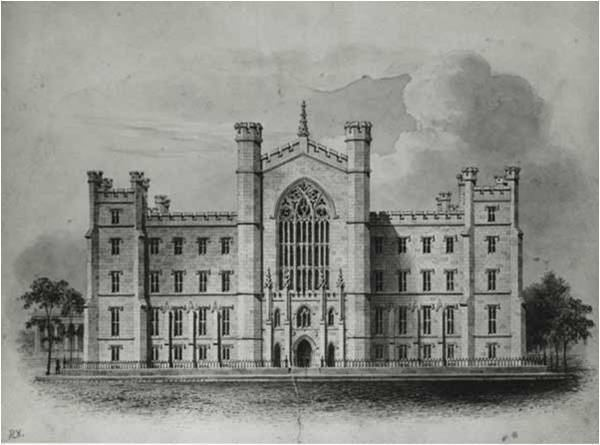
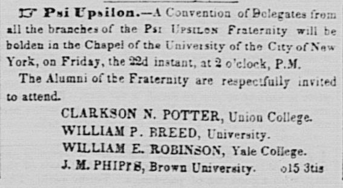
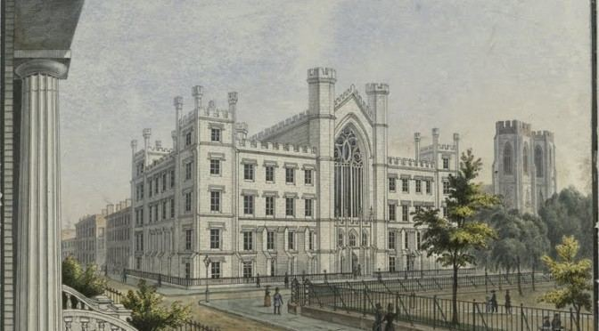

From the Archives · 1841
Psi Upsilon's First Convention in 1841

Psi Upsilon became the first fraternity to hold a Convention 180 years ago, on October 22, 1841, and started an important annual tradition that continues to exist today.
The Convention was announced in the New York Tribune with the following:
"A Convention of delegates, from the several branches of the Psi Upsilon Fraternity, will be holden on Friday, Oct. 22nd at two o'clock P.M. in the Chapel of the University of the City of New York. All members of the Fraternity are respectfully invited to attend. Clarkson N. Potter, Union College William E. Robinson, Yale College William P. Breed, N.Y. University J.M. Phipps, Brown University"
Scan of the Convention Announcement from page 2 of the October 15th, 1841 New York Tribune

33 alumni and undergraduate members representing the four chapters of Psi Upsilon that existed at the time attended the first convention. Some significant developments occurred as a result of this meeting - including the creation of a membership catalogue of all the chapters, the decision to make the convention an annual event, and the establishment of the Gamma Chapter at Amherst, which was installed on November 16, 1841. The Convention records end by saying:
" The Convention was invited to supper by the Delta, when, for two hours, we enjoyed such a 'flow of soul,' of eloquence and song, as we trust will not be soon forgotten by any one then present."
You can read the full Convention Records of this first meeting, and subsequent conventions, in the Psi Upsilon Annals and also on our Psi Upsilon Archive site.

The "Old University Building", home of NYU in 1841 - located on the NE corner of Washington Square.